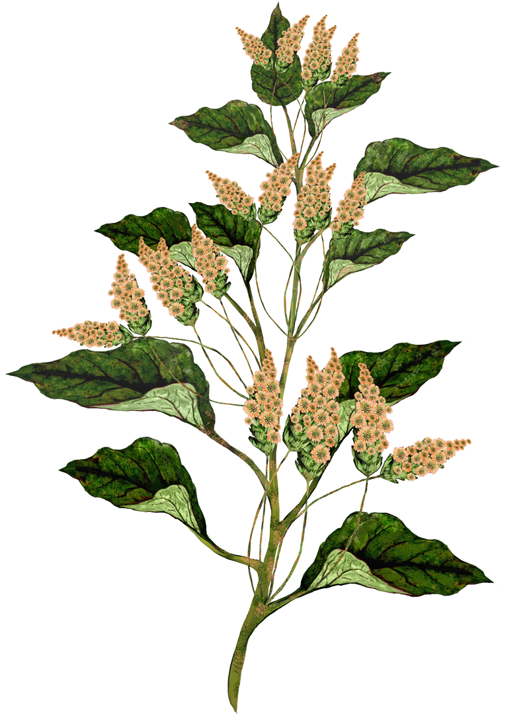
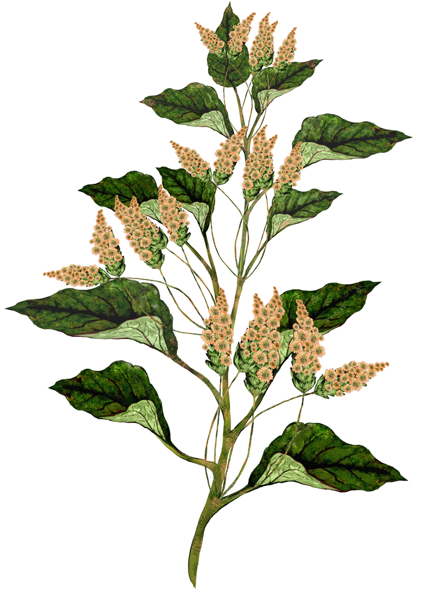

스위치
2014년, 오브제(드로잉), 266X315cm, 물소가죽(Buffalo hide)
소 한 마리의 가죽에 작가의 자작시와 드로잉들이 인두질로 새겨진다. 삶과 죽음을 다루는 시는 누군가 사랑과 실연의 고통으로 도피처를 찾게 될 때 우리의 내적 자아에 스위치를 켠 연인과 바람과 바다 그리고 절벽의 공간에서 마주하길 소망한다는 것이다. 지금의 디스토피아적인 상황속에서 작업은 더욱 현실적으로 보인다. 제도로 길들여지거나 컨트롤 되지 않은 상태의 본연의 감각과 취향, 감정, 성적 지향(sexual orientation)등을 드로잉 한다. 이것들은 한결같이 뜨거운 인두로 지짐질 당하며 살아있던 동물의 피부에 타는 냄새를 진동시키며 그려진다. 가죽은 열에 사라져버린 몸뚱이들 지키려 버텨내지만 곧 뜨거운 열기에 오그라들고 만다. 여리고 약한, 깊히 들여다보기 전엔 알 수 없고, 누군가에게 쉽게 이야기할 수 없는 이야기들로 채워진다.
붉은 드로잉-프로젝트
2020~2021년, 오브제(엽서작업, 낭독용),
각 15X21cm
질병의 시대에 고립된 상태의 삶을 살아가는 이들에게 엽서를 보낸다. 같은 시기를 보내는 작가의 일상은 마치 그림일기처럼 작은 종이에 그려지고, 변화된 일상과 감정의 상태를 함께 공유하며 아날로그적인 방식으로의 소통을 취한다. 엽서를 받은 이들은 각자의 방식대로 피드백을 취하게 되는데 작가와의 1:1의 관계로 혹은 불특정 다수를 향한 방식으로 확산될 수 있다. 이러한 유기적 소통의 방식은 전통적 예술교류 공간의 물리적 한계를 깨고 범람하는 전자매체의 시대에 사람과 사람간의 전달방식으로 연결되는 다소 느린 속도감을 느끼게 한다. 붉은 드로잉 프로젝트의 참여자 중 상당수가 해외 거주자들이며 팬데믹 상태에 대한 서로의 안부를 묻고 깊은 위로와 삶에 대한 숙고의 기회를 만들어보고자 한다.
수집된 기억들
2021년, 사운드, 2분 30초
오디오를 다루는 것에 능숙하지 못해 시도한 작업들이 소음에 그치기를 반복한다. 이런 오디오를 불가피하게 들어야만 하는 청취자의 괴로움을 알기에 적어도 들었을 때 긍정적인 기억을 소환할 수 있는 소리들을 채집했다. 불과 1년전만 하더라도 이렇게 채집된 평범한 소리들은 익숙하게 들을 수 있던 소리들이었지만 현재 마주한 팬데믹 상황에서는 오히려 일상적인 소리와는 다소 거리감이 느껴진다. 오디오는 작가가 과거에 촬영한 비디오에서 사운드를 추출해 연결된다. 이태리 시골 성당에서 울리던 종소리, 재즈클럽의 공연 소리, 나무조각을 하는 소리, 배고픈 길고양이가 사료를 먹는 소리, 오케스트라의 튜닝소리 등 과거의 이러한 순간들이 얼마나 귀하고 소중한 것인지를 작지만 아름다웠던 일상의 소리를 통해 전하고자 한다.
장지아 (1973년생)
장지아는 한국예술종합학교 미술원에서 조형예술학 학사, 동대학원에서 전문사 과정을 마쳤다. <노려본들 어쩔 것이냐, 두산갤러리, 서울, 2020>, <Omerta: 침묵의 계율, 대안공간 루프, 서울, 2007>, <중력의 중심은 어디인가?, 아트선재센터-서울아트시네마, 서울, 2004> 등 9회의 개인전과 <한국 비디오 아트 7090-시간 이미지 장치, 국립현대미술관, 과천, 2019>, <Feasts on paper, 펑시엔박물관, 상하이, 2019>, <무브 온 아시아: 동양적 은유, 대안공간 루프, 서울, 2012> 등의 단체전에 참여했다. 2014년 국립현대미술관 ‘올해의 작가상’, 2012년 두산문화재단의 ‘두산 연강상’을 수상했으며 2014년 두산 뉴욕 레지던시와 2006년 국립현대미술관 창동레지던시에 참여했다.
나의 쌍동이 문어 Octo-8을 위한 노래
2020년, 비디오,
10분 15초
나는 먹물을 가진 물고기(文魚octopus)와의 관계를 통해서 인간이 중심이 된 편협한 이데올로기를 뒤흔들어야 할 새로운 존재 양태의 언어 출현에 대해 상상한다. 인간은 여태까지의 지구의 언어를 소외시키고, 인간은 자신이 무엇이어야 했는지를 잊었다. 인간 중심으로 전개된 언어는 이미 지난 세기의 오랜 된 향수처럼 보인다. 이 새로운 존재 양태의 언어란 완벽한 언어를 벗어나야만 가능한, 실패를 통해서만이 가능한, 오염되고 혼종적인 언어이다.
이 혼종의 언어에 대한 실천으로 퍼포머들은 인간이 속한 공간에서 이동하여 물속에서의 문어에게 노래를 부른다. 이 노래는 새로운 공간에서 신체적으로는 지속 가능하지 않고 알아듣기 힘든 변형된 소통이자, 처음과 끝이 없는 과거와 현재 그리고 미래의 구조를 벗어난, 자아와 타자, 주체와 객체의 경계와 없는 언어이다.
이 작업은 갑작스러운 Covid-19의 상태로 인해 본래의 촬영 계획과는 달리 진행되었다. 나는 이 상황을 적극적으로 받아들이기로 했다. 나는 내가 있는 자리를 지키고 퍼포머들도 자신들이 있는 곳에서 퍼포먼스를 진행하였다. 나는 두 곳, 인도네시아와 한국의 퍼포머들에게 아주 기본적인 인스트럭션(Instruction)을 전달하여 자신이 해석하는 퍼포먼스를 수행하도록 하였다. 이 두 곳에서 일어나는 우연성도 있는 대로 받아들이고, 또 이 비디오 클립들을 본 후 나 자신의 의도도 처음 의도에서 자연스럽게 변화하도록 허락하였다. 이 작업의 과정은 많은 우연성이 겹치기도 하고 변화가 일어나는 혼란과 실패 속에서 언어적 해방에 더욱 다가가는 여정이었다.
미정
2021년, 사운드
조은지의 사운드 작업 < >는 두 명의 인도네시아 사운드 아티스트 DJ Danger Dope와 MC Eloops의 협업으로 제작되었다. < >는 작가의 영상 작업 <나의 쌍동이 문어 Octo-8> (2020)의 수중에서 등장하는 노래를 비트를 기반으로 한 사운드 작업으로 제작되었다.
기획 - 조은지
수중 노래(Underwater Singing) - Eloops
편곡 및 비트작업 (Arrangement & Beats) - Danger Dope
조은지 (1973년생)
조은지는<두 지구 사이에서 춤추기, 대안공간 루프, 서울, 2020>, <열, 풍, 아트스페이스 풀, 서울, 2017>, <떨어지는 계란, 원앤제이 갤러리, 서울, 2016> 등 총 8회의 개인전을 개최했다. 주요 단체전으로는 <인류세: 한국 X 브라질 2019-2021, 일민미술관-브라질 상파울루 비데오브라질, http://videobrasil.online/비디오브라질 온라인 전시>, <생태 감각, 백남준 아트센터, 용인, 2019>, <불멸사랑, 일민미술관, 서울, 2019>, <배틀 베틀, 토탈 미술관, 서울, 2018>, <플라스틱 신화들, 국립아시아문화전당, 광주, 2015>, <땅, 흙이 말했다, 뒤셀도르프 페스티벌, FFF 뒤셀도르프, 2012> 등이 있으며2008년 네덜란드DCR레지던시에 참여했다. 조은지는 최근 먹물을 가진 물고기(文魚 octopus)와의 관계를 통해서 인간이 중심이 된 이데올로기를 흔드는 새로운 존재 양태의 언어를 보여주고 들려주는 작업을 해오고 있다.
Shiva Feshareki
Vapour
2020, 사운드, 4분 37초
시바 페샤레키 (1987년생, 런던)
시바 페샤레키는 런던 왕립음악대학에서 박사과정을 마친 뒤 런던을 중심으로 활동하는 영국-이란계 아티스트이다. 일렉트로닉 사운드 및 클래식 오케스트라와의 협업을 통한 작업을 선보이는 작가는 고전적인 형식과 실험적인 방법론을 넘나들며 실험적 음악의 다채로운 맥락을 탐구한다. 작가는2016년부터 2017년까지 런던 왕립음악대학의 교수로 재직하였으며 2018년 <Brighter Sounds: Both Sides Now>에서 디렉터로 활동했다. 최근 활동으로는 <Pioneras Electrónicas, Mexico City, 2020>, PRS재단 후원하에 진행된 <New Music Biennial, 사우스뱅크 센터, 런던, 2019>이 있으며 <Ulverston Music Festival, 런던, 2010>, <영국 국립 청소년 오케스트라> 레지던시에 참여한 바 있다.

텅 빈 세계
2020년, 비디오(사운드 포함)
“과거에는 ‘진화’가 태양 에너지를 바탕으로 활동하는 우리의 ‘체내 기관들(심장, 폐 등)’이 서서히 적응해 나가는 과정을 의미했다면, 현재는 지구의 저(低)엔트로피에 의존하는 ‘체외 기관들(자동차, 비행기 등)’의 급속한 변화에 적응해 나가는 과정이 진화의 경로이다. 체외 기관들의 불균등한 소유와 체외 기관들을 만드는 원천인 저엔트로피 보유고에 대한 불균등한 소유가, 산업 사회에서 사회적 충돌의 근원이다. 상대적으로 균등한 체내 자본의 소유와는 대비되는 부분이다. “ - 허먼 데일리(Herman Daly)
무한한 듯 보이는 태양 에너지와 달리 한정된 보유량의 화석 에너지를 둘러싸고 벌어진 탐욕스러운 경쟁은 금융과 함께 현대 산업 사회에서 사회 경제적 갈등을 일으키는 주요 원인이 되어왔다. 그러나 사회 경제의 영역이 팽창하여 그 외부에 존재하는 생태계라는 테두리와 접하게 되는 꽉 찬 세계가 되면 사회는 더 이상 존재할 수 없다. 외적 성장 대신 공존할 수 있는 내적 발전을 선택하는 가치의 전환이 필요한 순간이다.
함양아 (1968년생)
함양아는 한국, 네덜란드, 터키 등 여러 지역에 거주한 경험을 토대로 사회시스템 안에서 존재하는 개인과 집단, 그리고 사회화된 자연에 대한 작업을 해오고 있다. 주요 전시로는 <흔들리는 사람들에게: 2020 타이틀매치 함양아 vs. 서동진, 북서울시립미술관, 2020>, <정의되지 않은 파노라마 2.0, 대안공간 루프, 서울, 2019>, <트랜스-저스티스, 타이베이 시립미술관, 2018>, <아시아 아트 비엔날레, 대만 국립현대미술관, 2017>, <미디어시티서울 비엔날레, 서울시립미술관, 2016>, <불협화음의 하모니 전, 아트선재센터, 히로시마 시립미술관, 타이베이 관두미술관, 2015-2016>, <올해의 작가상 전, 국립현대미술관, 과천, 2013> 등이 있다. 2004년 다음작가상, 2005년 한국문화예술위원회 올해의 예술상을 수상했고, 2006년부터 2007년까지 암스테르담 라익스 아카데미 레지던시에 참여했다.
Christina Kubisch
Tesla’s Dream
2014, 사운드, 22분 56초
무선 에너지, 구리 코일, 자기장 유도, 리모컨 그리고 니콜라 테슬라에 관한 작품
나는 오래전부터 니콜라 테슬라에 매료되었다. 그는 전기 산업이 발전되기 이전부터 무선 통신을 상상했으며, 일반적으로 알려진 기술적 한계를 뛰어넘어 무선 제어 장치(radio controlled devices)및 기타 새로운 장치들을 고안했다. 테슬라는 1895년부터 뉴욕에서 30마일 떨어진 곳으로부터 무선 신호를 수신하고 있었다. 그는 오늘날의 다양한 전자 기기들과 통신 기술들의 발전을 이끈 선구자이다. 그가 고안한 새로운 방법들은 금전적인 문제와 이론적인 문제들로 실현시키기에 역부족이었으며 그로 인해 더욱 특별한 인물로 평가된다.
1970년대 말, 밀라노에서 전자공학을 공부하던 중에 테슬라 작품을 접하게 되었다. 그 시기는 음향 설비에 전자기기 유도 시스템 도입을 시작할 무렵이었다. 테슬라는 1882년부터 부다페스트에서 송수화기 증폭기(telephone amplifier)를 발명하고 특허를 받았는데, 이러한 정보를 알지 못한 채 나는 작은 코일이 내장된 간단한 송수화기 증폭기를 사용하여 사운드 설치작업을 했었다. 이후에 전자 유도(electromagnetic induction)방식을 도입한 작업들은 일상적으로 우리 주위에 숨겨져 있는 전자기장을 (소리로)들을 수 있게 특수 고안된 헤드폰을 쓰고 걷는 ‘도시 산책 시리즈’ <Electrical Walks>로 발전했다. 2012년, 슬로바키아 동남부에 있는 코시체(Kosice)에 위치한 작은 과학 박물관을 방문한 적이 있다. 그곳에는 많은 테슬라 기기들이 전시되고 있었고 그것들을 시험해 볼 수 있는 특별 허가를 받았다. 내가 고안한 특수(전기) 유도 헤드폰을 테슬라 기기에 연결하여 사운드를 들었을 때, 뇌우처럼 쏟아지는 전자기 소리에 사로잡혔다. 원격 전자 시스템을 도입한 작업을 결심한 바로 그 순간이었다.
어린시절 테슬라는 전기, 라디오, 자동차, 전화, 영화 등을 접하기 어려운 오스트리아(현재 크로아티아)의 작은 마을에서 자랐다. 소년시절의 그는 다른 어떤 것 보다도 자연을 사랑했다. 1893년, 그러나 이미 36세의 나이에 그는 10만개의 전등(그가 고안한)으로 시카고 세계 박람회(Chicago's World Fair)를 밝혔다.
그 때 이후로 빛, 라디오, 레이더 등과 관련된 새로운 기술들은 오늘날의 디지털 세계와 같이 놀라운 속도로 발전하고 있었다.
나는 항상 테슬라가 인터넷, 구글, 트위터, 페이스북, 기타 어플리케이션에 대해 어떻게 생각했을지 궁금해하곤 했다. 이것이 그가 전기 신호를 이용한 무선 전송 시스템을 발명할 때 염두에 둔 선견지명이었을까? 그의 작업 공간은 전선 없이 에너지를 전달하려고 했던 크고 무거운 코일들과 발전기들, 금속 송신탑 등으로 가득했다. 오늘날 우리는 디지털 통신과 저장소(storage)가 오직 대기(ether)속의 보이지 않는 파동에만 기반된 것이라, 테슬라의 장비보다 훨씬 크고 무거운 서버 룸을 필요로 한다는 사실을 망각한다.
작품 <Tesla’s Dream>은 오리지널 아르모니카(Armonica 또는 글래스 하모니카(Glass Harmonica), 19세기 악기) 소리와 오스트리아의 옛 기차역에서 녹음된 자기장 소리들(magnetic fields)을 시작으로, 브라티슬라바(Bratislava, 슬로바키아의 수도)의 옛 타트라(Tatra) 전차선로(지금은 자취가 사라져 가는)로부터 비롯된 전자 멜로디가 잇따라 흐른다. 이내 테슬라 기기의 소리가 차츰 시작된다. 사운드가 재생되는 동안 전자기 신호(electromagnetic signal)는 아날로그 기계의 소리에서 조명 시스템, 보안 시스템, 송전선, 은행, 지하철, 공항, 발전소 등 실제 현장에서 파생되는 소리로 변환된다. 디지털 통신의 다채로운 신호들이 서서히 합쳐서 사운드 구조를 뒤바꾼다. 이 구성은 라스베가스의 한 쇼핑 센터에서 녹음된 전광판 소리로 마무리되며, 대기(ether)속에 존재하는 다른 (전자)신호의 희미한 진동을 동반한다.
테슬라는 전기 에너지로 지구에서 가장 먼 곳까지 도달하길 원했지만 오늘날 더 이상 (도달할 수 없는)외딴 곳은 존재하지 않는다.
아르모니카 소리는 베를린에 위치한 악기 박물관(Musikinstrumenten Museum)에서 녹음되었으며, 다른 모든 사운드들은 Christina Kubisch가 고안한 헤드폰과 기타 다른 맞춤형 제작 장치로 녹음되었다. 전기장 소리(electrical field)의 원본 녹음은 오스트리아, 독일, 슬로바키아, 영국, 체코, 뉴욕, 라스베가스 등에서 제작되었다.
제작: Studio Hoppegarten, Visby International composer centre(스웨덴)
사운드 엔지니어링 및 마스터링: Ecki Güther
크리스티나 쿠비쉬 (1948년생, 브레멘)
크리스티나 쿠비쉬는 독일의 사운드 아티스트 1세대를 대표한다. 회화와 음악, 전자 공학을 수학한 뒤 베를린을 중심으로 유럽 및 세계 각국에서 다양한 활동을 펼치는 작가는 주로 70년대의 퍼포먼스, 공연 및 미디어 작업을 선보이며 자외선을 이용한 사운드 설치 및 조각 작업을 해오고 있다. 1970년대 말 쿠비쉬는 전자기 유도 작업을 시작하여 1980년 첫 사운드 설치 작업을 제작한다. 2004년 공공미술의 일환으로 도시 곳곳에서 발생하는 전자파에 주목한 작업인 <전자적 산책Electrical Walks>을 쾰른에서 소개한다. 작가는 공기중에 입자로 존재하는 도시 속 전자파를 오디오 신호로 변환하는 특수 헤드폰을 고안한다. 헤드폰을 쓴 관객은 도시 곳곳을 걸어 다니며 전자 기기 간의 상호 작용으로 인해 발생하는 새로운 소리를 듣게 된다. 이 작업은 베를린, 칼스루헤, 브레멘, 옥스포드, 뉴욕 등에서도 진행되었다. 작가는 2003년 이래로 다양한 뮤지션 및 댄서들과 협업을 하였으며 <Blurred Edges Festival, 함부르크, 2015>, <White Walls Have Ears, 홍콩, 2012>, <Invisible Geographies: Sound Art from Germany, 뉴욕, 2006> 등 다수의 전시와 페스티벌에 참여하였다. 2008년 독일 사운드 아트 어워드에서 디지털 음악부문 명예상을 수상하였다.

ONG GI JONG GI
2021
Statement
The Island of Women or ÎLE AUX FEMMES
Video (sound), 2019, 13 min
Statement
Biography
Seulgi Lee (b. 1972)
Seulgi Lee lived in Paris since 1992 and her work focuses on the practice of comprehensive craft, intersection and correlation with language via her own experience. Including the experience in Mexico and Morocco, she has built a contemporary formative language, including the work of visualizing Korean proverbs in geometric patterns by utilizing quilts as a medium (cooperated with quilted quilt artisans in Tongyeong). Solo exhibitions of her work have been organized through WE ARE NOT SYMMETRICAL (la Casa da Cerca art centre, Almada, 2020), SOONER’S 2 DAYS BETTER (La Criée centre d’art contemporain, Rennes, 2019), DAMASESE (Galerie Jousse Entreprise, Gallery Hyundai, 2017-18), and has taken a part in group exhibitions such as The moment of ㄱ Giyeok (first Korean alphabet)* (Seoul Arts Center, Seoul, 2020), Born, A woman (Suwon Museum of Art, Suwon, 2020), Busan Biennale (Museum of Contemporary Art Busan, 2020). Lee is currently presenting a DONG DONG DARI GORI PROJECT (Korea Artist Prize, MMCA, Seoul, 2020), and she is preparing for the group exhibition Accélérations (Centre Pompidou, Paris, 2021), which will be held following year.
YOUNG JOO LEE
Young Joo Lee
Jaguar’s Vision
2021, Video (animation), 3min 40sec
Statement
Jaguar’s Vision is a short animation film narrating an encounter between four humans living in a jungle and a jaguar. In the past, humans continued to live as a part of nature – learning from nature, revering nature, and understanding nature in its wonderous existence. Nature was a realm of life in which humans can gather food and sustain life, but at the same time, a realm of cruel and ruthless competition in which different elements threatened their survival. Humans have survived in nature through cooperation. The current global spread of COVID-19 proves that cooperation between both individuals and collectives remains crucial for human survival even in contemporary times. As humans cemented their position as the dominating species in nature, they became the fearless of the world. However, the power dynamics between humans and nature still persists through the conflicts between individuals, collectives, nations, and races. Through this work, I wanted to question what humans have lost in relationships with one another at the cost of declaring themselves as the dominators of nature, and by so doing, understand the origins of chaos we are experiencing today.
In Jaguar’s Vision, the jaguar represents nature, which was once revered as sacred by humans (Jaguars are considered sacred in South America). By turning jaguars into objects and commodities, humans exploit nature as a mirror onto which they project their desires.
In creating the animation, I referenced the realistic yet frozen look of dioramas in natural history museums. Sound for the film was edited by sound designer and musician, Christian Amigo.
Black Snow
2019, Video (Digital Animation), 11mins 13sec
Statement
From 1946 to 1958, the United States government conducted 67 atomic bomb tests in the Marshall Islands. Black Snow is a tale based on the archival footage of these tests and the on-going threats imposed on the lives and of the native people and the natural environment of the islands. The native islanders who were living further from the Bikini Atoll (the site of the first atomic test - Operation Crossroads) were not aware of the devastating effects of the radiation at the time of the test as they were not informed properly. It is told that some natives mistook the nuclear fallouts as snow and ate them. After the tests, the US officials advised the natives not to consume the local food, such as coconuts, which were part of their staple diet. Instead, the US government provided processed and canned food, which increased the rate of diabetes, obesity and other health issues of the native population.
The concrete dome, called the Tomb by the locals, is hiding the nuclear waste buried after the series of tests. Due to the rising sea level and corrosive sea water, the concrete has gotten cracks and it is releasing toxic materials to the ocean and the land. The concrete dome was supposed to last for 20,000 years. After 60 years, the radiation generated by the series of atomic bomb tests threaten the Marshallese and the ecosystem of the Pacific ocean.
Magic Kingdom
2020, Web-based game
Statement
“Success” is the name of a cologne by former President Donald Trump’s brand. On Amazon it has over 700 reviews and Lee plays with these in the game as a commentary on notions of American freedom, masculinity, and economic success in a kingdom of capitalist automatons. In the game, the cologne bottles are lined up like soldiers guarding Trump castle, a distant but menacing specter of economic power. Yet the cologne bottles are rendered as two-dimensional, thin and feeble; you can knock them over like a house of cards reminiscent of Alice’s encounter with the playing cards guarding the palace of the Queen of Hearts. The emasculated soldiers/cologne bottles/playing cards serve to protect the power of the monarch despite their flimsy reality. The user is immersed in this sea of cologne bottles, left to wallow in the absurdities of American capitalist ideologies, and ponder whether one can truly purchase “success.”
Song from Sushi
2016, Animation music video, 4min 47sec
Statement
Song from Sushi is a music video featuring music and lyrics by Lee. The lyrics were written as a response to the blatant sexual comments targeted at Asian women, which the artist experienced on a daily basis during her years studying abroad in Germany. Displaying her body on rotating sushi plates, she invites others to consume her body by presenting herself as a delectable delicacy like the thinly sliced pieces of fish. At the same time, she reminds the consumers that what they consume is only a temporary, futile fantasy. In the latter half of the song, the artist expands beyond the subject of sexual discrimination to address the issues of race, as well as other stereotypes and misjudgment of others, singing about how these factors limit the relationship and experience between humans.
Biography
Young Joo Lee (b. 1987)
Young Joo Lee graduated in Painting from Hongik University in Seoul, received a Meisterschüler in Film at Academy of Fine Arts Städelschule Frankfurt and an MFA in Sculpture at Yale University as a Fulbright Scholar. Her work focuses on personal and collective experiences of the contemporary era, and the intersections of these with mythological symbols and narratives. Based on those ideas, she writes and creates different mythological or sci-fi tales as animation, performance and drawing. Lee’s solo shows include MINE (Ochi Projects, Los Angeles, 2018), The Survivors (Basis Projektraum, Frankfurt, 2014). She took part in group exhibitions such as AUTOSAVE (Common Center, Seoul, 2015), Curitiba Biennale (Curitiba, 2013) and more. Lee has participated in a number of residency programs including Open Sessions (Drawing Center, New York, 2018-20). She is currently a Harvard Film Study Center Fellow (Harvard University, 2020-21) and was a Harvard College Fellow in Media Practice (Harvard University, 2018-20).
TANIA LEÓN
Tania León
Horizon
2008, Sound, 8min 56sec
Statement
Biography
Tania León (b, 1943. Havana)
Tania León, a composer and conductor, is recognized for her accomplishments as an educator and advisor to arts organizations. Based in New York, she has played important roles at New York institutions, including New Music Advisor. She is the founder and artistic director of Composers Now, which supports composers living in New York City. The artist’s recent premieres include works commissioned by the New York Philharmonic, the Los Angeles Philharmonic, the International Contemporary Ensemble, and Ursula Oppens with the Cassatt Quartet. Tania León’s honors include induction into the American Academy of Arts and Letters and the American Academy of Arts and Sciences, recognition from the Fromm, Koussevitzky, and Guggenheim foundations, the ASCAP Victor Herbert Award, and the United States Artists Fellowship (2018). She is currently a Distinguished Professor Emeritus of CUNY.
YE-EUN MIN
Ye-eun Min
ige majna(Is This Right)
2012, Video (sound), 3 min
Statement
Transmitted by word of mouth through generations, folk songs can only continue to pass down if it sparks “empathy” among the contemporary generation. Folk songs are like the stories of life, and the sounds of life. With the changing times, however, the traditional folk song genre of labor song is on the verge of vanishing into history. Could Is This Right continue to pass on as a folk song? In order to expand the voice into the realm of others, the song delivers the sound through the voice of others, rather than the self.
What would it mean to compose the lyrics as a question? The dictionary defines a “question” as an “interrogative expression used to find out about something,” but in Is This Right, the question is not aimed to elicit an answer. The question cannot be answered, since there is no certainty in the answer, nor any obligation to answer. The question itself is whether it should be answered at all. The questioning must go on. The question has been continuously asked, continues to ask, and will continue to be asked. Perhaps, through the question, each of us can at least get a sense of the direction to which we should or should not be headed.
Is This Right adds new lyrics to the sound of Saseol Nanbongga, a traditional folk song from the northwestern region of Korea. The sound is performed by students of the National Middle School of Traditional Korean Arts.
Producer - Ye-eun Min
Composer - Unknown (Saseol Nanbongga)
Lyrics - Ye-eun Min, Geon Choi
Sound instructor - Sejeong Oh
Sound - Students of the National Middle School of Traditional Korean Arts (Kyuri Kim, Yeowon Kim, Yeju Noh, Eunbi Sung, Jiwoo Ahn, Hyeonseo Yoon)
Biography
Ye-eun Min (b. 1986)
Ye-eun Min received her bachelor's and master's degree from École Supérieur d’Art Clermont Métropole in France. The artist held four solo exhibitions including Unpredictable Invisibility (Alternative Space LOOP, Seoul, 2019), Sens Dessus Dessous (Korean Cultural Center, Paris, 2015), also participated in several group exhibitions Time Reality: disconnection, trace, oblivion (Coreana Museum of Art, Seoul, 2019), De la nature des liens (Cabane Georgina, Marseille, 2017), ita, ita, ita (Cheonan Arts Center, 2017). She participated in Triangle Arts Association in New York in 2019, MMCA Goyang Residency in 2018, Cite International des Arts in Paris in 2015. Min's work begins with the concepts of contradiction, discomfort, disorder, dispersion, dissonance, interference and so on which arise from heterogeneous culture. Artworks as entities form relationships and inflict influences on each other. Through numerous efforts in trying to find a balance, they’ll reach equality. Min mixes diverse media to homogenize them, and explores social interactions and exchanges, while looking for the adequate territory for cultural sharing.
JEON MIRAI
Jeon Mirai
POP !
2021, Installation, Dimensions variable, Object (Circular cork, circular mirrors)
Statement
Work 1. Image Combining the (Korean) Letters for “Body,” “Dance”
Work 2. “Festival”
Work 3. “Woman (女)”
Circular mirrors arranged in the image of an open cork, with the Korean letters for “body,” “dance” and festival” exploding with a pop.
POP ! is an installation arranged in a circular form that evokes the shape of a “hole” or a smaller “yeast” or “bubble.” Whatever it may be, the circular cork is shown as if it just exploded with the sound of “POP !” The images spilling from the work represent different forms of communicating with the world. Letters including “dance,” “body,” and “festival,” shatter the cork as they reveal images of the outside through the mirrors.
Throughout time, “what spills through an open cork” has inspired the human mind and body to celebrate joy, dance, and art. It is something that is fermented, used in rituals and ceremonies to connect the living with the dead across time and space.
Fermentation generates immense fear by perilously pushing the body and consciousness to the threshold between life and death. The reason why well-fermented and aged things smell fragrant is because they have accepted the constant feeling of death, and therefore, has no fear.
Everything becomes joy when one accepts all death. Joy flows and dance follows. This is the scent of fermentation. Authentic communication with the world begins through the scent of fermentation through the body.
POP ! POP ! POP ! The cork explodes everywhere, announcing the start of an intimate festival.
This is a sound that echoes beyond the mix of you, me, and the world. POP ! Let the celebration begin!
Biography
Jeon Mirai (b. 1981)
Jeon Mirai graduated from École Nationale Supérieure des Beaux-arts in 2009 and completed the post-diploma in 2010. During her master’s degree in sculpture art at Sorbonne University in 2012, she returned back to Korea due to her heart problem. She presented four solo exhibitions including Fermantation Party (Mimesis Art Museum, Paju, 2015) and took a part in group exhibitions such as Move: On the Spot (MMCA, Gwacheon, 2012), Random Access (Nam June Paik Art Center, Yongin, 2010). The artist participated in Gyeonggi Creation Center Residency Program from 2014 to 2015, and SeMa Nanji Residency Program from 2012 to 2013. In 2018, Jeon featured a performance which relates to ‘performativity’ in Hangang_Art in the Flow (Hangang art project, Seoul, 2018). She was involved in various art projects such as AlreadyNotYet (Korea National Contemporary Dance Company, Seoul, 2016) which she took a role in visual arts.
ÉLIANE RADIGUE
Éliane Radigue
Biogenesis
1973, Sound, 21min
Statement
Biography
Éliane Radigue (b. 1932, Paris)